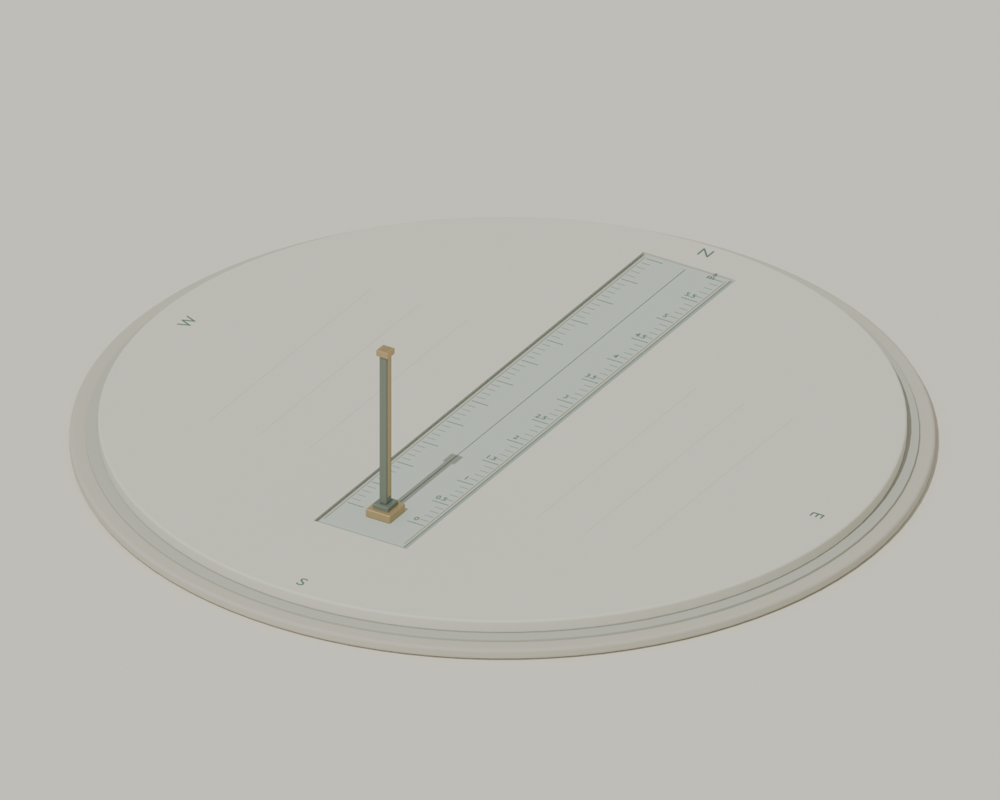

卷中一景 · 立表知时
立一表，量一影。看太阳与四时，如何落在一把尺上。
春分 · 正午

观象台正在展开……
拖动旋转 · 滚轮或双指缩放
每一刻，太阳各有其位
竖表立直、圭面水平时，影长 = 表高 ÷ tan（太阳高度角）。这里的表高为2米，阴影方向与太阳所在方向相反。拖动视角只改变观察角度，不改变数据。
交节时刻由太阳视黄经搜索得到，每隔15°为一个节气。测影取交节所在北京时间日期的当地太阳上中天时刻；它通常不等于北京时间12:00。影长使用太阳中心的几何高度，不计大气折射；日出日落使用标准折射模型。地点坐标为城市近似坐标。
此圭表为科普示意模型，刻度以米表示。节气与黄经依据 ↗天文计算引擎 ↗
请启用 JavaScript 以操作三维模型和节气计算。